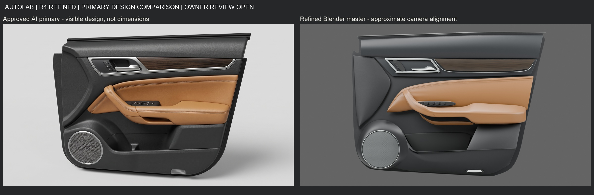
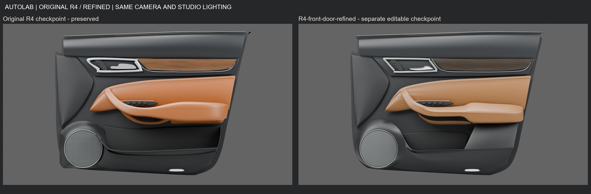
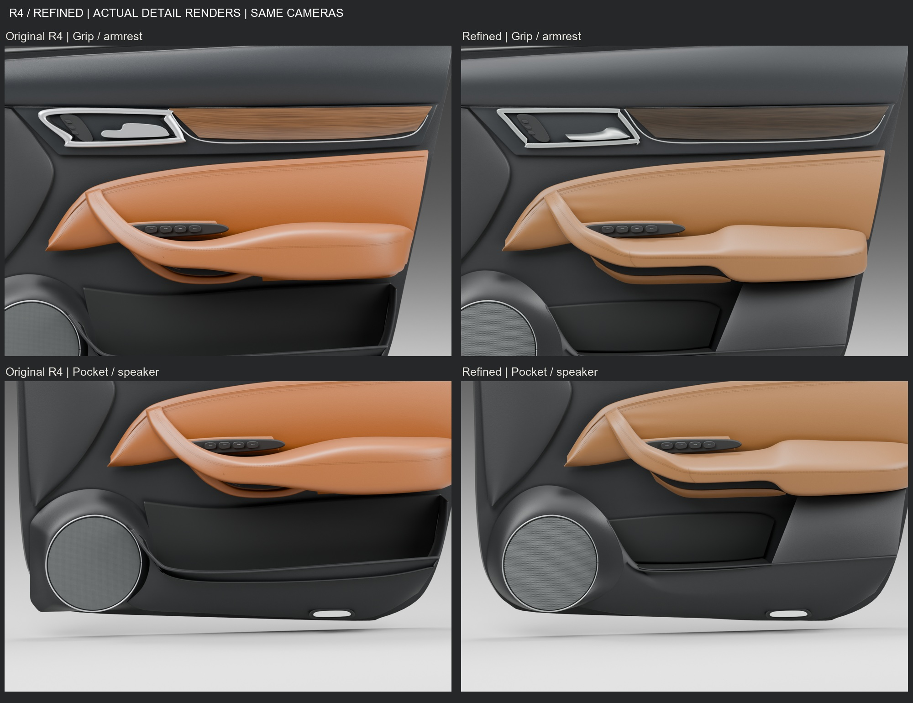
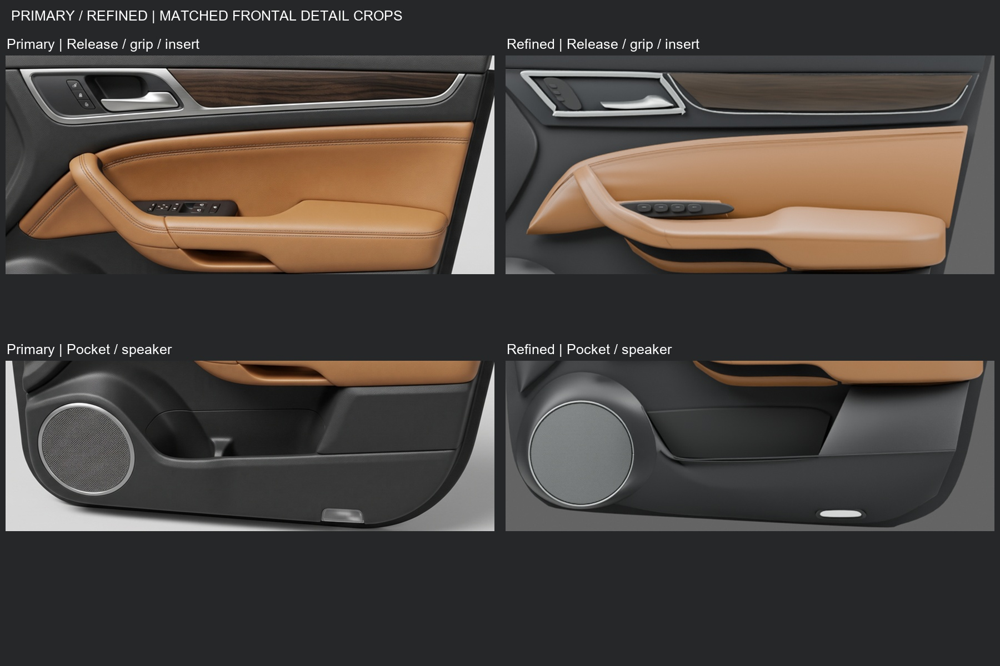

AUTOLAB / R4 REFINED / OWNER CHECKPOINT
Front door.
A focused refinement.
Separate editable Blender master and actual renders. Data and local construction checks PASS. Final visual acceptance remains OPEN.
Approved design and refined master

Approximate orthographic alignment and matching aspect ratio. The AI image governs visible design; its camera and manufacturing dimensions are unknown.
Original R4 and focused refinement

Original R4 remains unchanged. Camera, framing and studio lighting are retained for this comparison.

Reference detail comparison

The armrest is flatter, the grab opening is visible and the former speaker/pocket fold has been replaced. Remaining differences include upholstery tension, grab proportions, lower-panel shaping, control detail and material uniformity. Read the visual inspection before deciding.
Final inspection views
Owner decision
Please judge silhouette, grip integration, pocket and speaker construction, release/trim and material credibility. This review does not record acceptance. No runtime GLB, application change, other cabin component or workflow transfer is included.